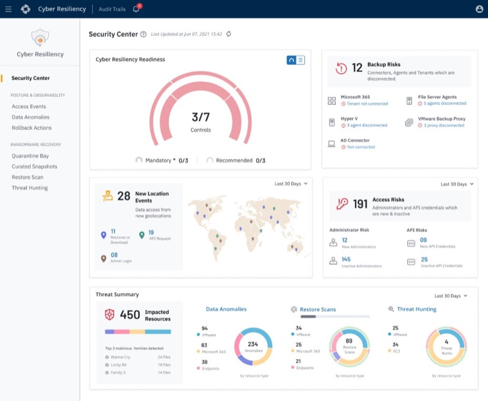

Split donuts

Why it failed: Equal scale implied recommended controls held equal operational urgency to mandatory audit blockers.
Case Study · 02
Cloud Administrators didn’t know Cyber Resiliency capabilities—and even when they did, baseline security lived across 6 Scattered Pages. I designed discovery onboarding plus a Readiness Score for Mandatory and Recommended setup in place.

Confidentiality note: This project is under NDA. Design is complete and moving into development. Interface redrawn and figures synthesized for case study presentation — core architectural logic and UX constraints remain true to production.
Problem 01
Problem 02
Solution
Existing

Shipped

Explore Cyber Resiliency Features → solves Problem 01
Cyber Resiliency Readiness Score → solves Problem 02
Target Persona · Enterprise IT Operator
“I don’t have time to audit six settings pages—I need to know what’s misconfigured and fix it before InfoSec asks.”
Jordan owns day-to-day IT operations while absorbing periodic InfoSec audit requests that demand proof baseline controls are actually configured. Dual responsibility means Jordan needs to understand the product on day one, get an instant posture answer, and remediate fast—without becoming a full-time compliance analyst.
Problem 01 · Onboarding
Cloud Administrators—especially newly onboarded ones—landed in Security Center without understanding what Cyber Resiliency offered. Features lived in the sidebar, but nothing explained them. We needed a reusable onboarding surface that introduces capabilities today, and can open again when new features ship in the future.
Solution: Explore Cyber Resiliency Features


Problem 02 · Security posture
Even after users understood the product, baseline security—Multi-Factor Authentication, Single Sign-On, Geofencing, Reports, Alerts, and Restore Scan—still required hopping across six separate platform pages. Security Center only surfaced a static risk list, not a journey that walks admins through Mandatory and Recommended tasks.

What was broken
The goal
Make readiness feel like guided setup — walk the user through Mandatory and Recommended tasks so they actively strengthen security, instead of staring at a static risk list.
Before
Six disconnected settings menus for one hygiene check.
After
One Security Center anchor with in-context fix.
Time spent
Multi-page hunt across disconnected settings before Jordan even knew what was missing.
Reduced friction
Single-hub remediation — scan, locate the gap, and fix without leaving the dashboard.
Problem 02 · Iterations
Two failed visual models, then a shipped hierarchy: Mandatory and Recommended cannot share equal visual weight.
Why it failed: Equal scale implied recommended controls held equal operational urgency to mandatory audit blockers.

Why it failed: Concealed mandatory audit blockers behind small asterisks in an adjacent text list.


What shipped: Inner arc (Mandatory) + outer arc (Recommended) + interactive Gauge/List toggle + in-context configuration modals.
Problem 02 · Shipped
Inner arc tracks Mandatory progress; outer arc tracks Recommended. A Gauge/List toggle lets Jordan switch between macro compliance and a granular action list—then fix gaps in place.
01 · Macro
Answers “is my environment protected?” at a glance. Inner ring = audit-blocking Mandatory controls. Outer ring = risk-reducing Recommended controls. Hover reveals the exact gap.
02 · Micro
Answers “where is the immediate exposure?” Direct pass/fail status with pencil edit affordances per row, plus Mandatory asterisks and subscription minimums.

03 · Action
Answers “can I fix it without leaving?” Local modals let admins configure missing settings—Reports, Alerts, and more—without changing routes or losing page state.
Gauge and List views of the shipped Security Center — auto-advances every 4 seconds.

Decision 01
Supports two mental modes—scanning the high-level score (gauge) or reviewing specific failed controls (list).
Decision 02
Edit opens configuration flows in a local modal so admins fix gaps without leaving Security Center.
Decision 03
Dashboard arranged top-to-bottom from macro readiness down to active risk triage and threat hunting.
Deliberate tradeoff: Nested arcs alone weren’t enough for micro-tasking. We kept the concentric hierarchy for scanning, then offloaded the full checklist into a toggleable List view so the widget stayed scannable without sacrificing actionability.
Impact
Explore Cyber Resiliency Features gives new admins a guided tour on first login—and a reusable surface when future capabilities ship.
Reduced 6-page setting navigation to in-context local modals—higher baseline adoption without leaving Security Center.
Clear visual hierarchy plus Gauge/List toggle supports both executive macro-scanning and admin micro-tasking on one card.
Product demo
Druva's official walkthrough of the Security Center — real-time visibility into backup security risks, readiness scoring, and threat triage in one unified dashboard.
Watch product demo →